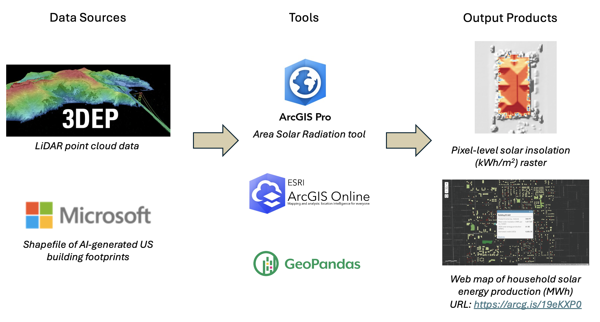
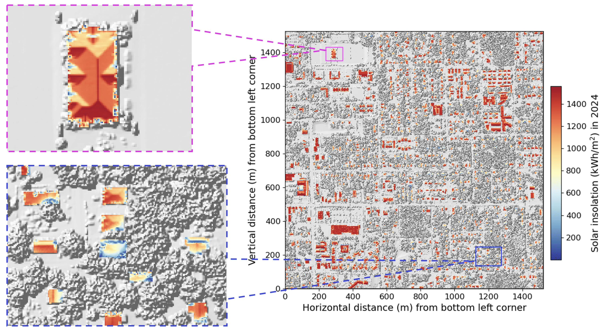

A LiDAR-based Evaluation of Rooftop Solar Potential in DeLand, Florida
Study Location
DeLand is a small residential city in central Florida with an estimated population of 41,263 in 2023. Located approximately 55 km north of Orlando and about 37 km west of Daytona Beach, DeLand offers its residents a rural feel with close access to sprawling business districts. Family establishments comprise over 60% of households in DeLand, with most of them being owner-occupied. On average, residents in DeLand consume about 19.2 MWh of energy per year, and pay approximately $3,612 in annual electricity bills. This expense is roughly 66% higher than the US-averaged annual electricity bill of $2,179 per household. With the immense scope for solar energy in Florida, DeLand’s residential landscape dominated by owner-occupied family homes presents a viable setting for a pilot study to assess house-wise rooftop solar potential.
Data Sources and Methodology

Raw data inputs:
US 3D Elevation Program (3DEP) LiDAR point cloud data (download link) of a 1.52 km \(\times\) 1.52 km area of DeLand, FL
Shapefile of Florida building footprints generated by Microsoft using computer vision models applied to Bing satellite imagery from 2012 and 2019—2020.
Methodology:
A digital elevation model (DEM) measures the elevation of the bare Earth surface relative to mean sea level. DEMs exclude surface objects such as buildings, vegetation, or infrastructure, from their representations. On the other hand, a digital surface model (DSM) captures the Earth’s surface as seen from overhead imagery.
I first generated a DEM and a DSM of my study region using my input LiDAR point cloud data. Then, I applied the Area Solar Radiation routine of ArcGIS Pro to compute pixel-level solar insolation estimates in kWh/m\(^2\) for the year 2024. Here, the solar insolation of a surface in a year is defined as the cumulative solar energy received per unit area normal to the surface.
Finally, I derived estimates of the household solar energy production as follows. \[ {\rm Household \ solar \ energy \ production} = \epsilon \Upsilon ({\rm Footprint \ Area}) \times ({\rm Footprint-averaged \ solar \ insolation}) \] In the above equation, \(\epsilon\) and \(\Upsilon\) are the solar panel panel efficiency and performance ratio respectively. The solar panel efficiency measures the fraction of incoming solar energy converted into electricity. Meanwhile, the performance ratio quantifies the proportion of generated electrical energy that is preserved through the panel installation. For this study, I chose \(\epsilon=22\%\) and \(\Upsilon=80\%\), which are representative values for commercially manufactured solar panels in 2024.
Results
- I show below a map of pixel-level solar insolation estimates, revealing shading effects from nearby trees. South-facing rooftops receive the highest insolation, especially evident from pixels with \(\gtrsim 1000\) kWh/m\(^2\) insolation.

Pixel-level solar insolation map. Left insets show zoomed-in views of the right panel for two specific localities. The top left inset demonstrates solar insolation values for a single home surrounded by trees. Evidently, solar insolation values are lower at roof bottoms due to shading from adjacent trees. The bottom left inset shows a collection of homes, where shade from tree cover significantly diminishes solar insolation near the edges of various building rooftops.
I present a web map showcasing solar energy production estimates for homes in my study region during the year 2024. In the absence of granular knowledge of the annual electricity consumption for each building, I assumed every household to uniformly require the mean energy demand of 19.2 MWh per year.
757 households (\(\approx\) 76% of homes) in my study region are expected to receive adequate solar exposure to meet the annual average demand of 19.2 MWh per home. Further, production of at least 19.2 MWh of solar energy necessitates a minimum home area of \(\approx\) 108 m\(^2\).
Florida has an active net metering system that pays residents for selling excess generated solar energy to the state power grid. Assuming a selling rate of 11 cents per kWh, 529 buildings (\(\approx\) 53% of homes) in our study area stand to generate annual profits exceeding $1000, thereby, highlighting the economic potential for widespread rooftop solar adoption in DeLand.
Areas for Improvement
Enhance accuracy of pixel-level solar insolation estimates through incorporation of historical climate data and detailed cloud cover assessments using satellite imagery and numerical weather prediction models.
Consider variable home energy requirements based on building footprint area, occupancy, and appliance usage patterns.
Evaluate constraints on solar energy production arising from government regulations on installable solar cell capacities for different building sizes.